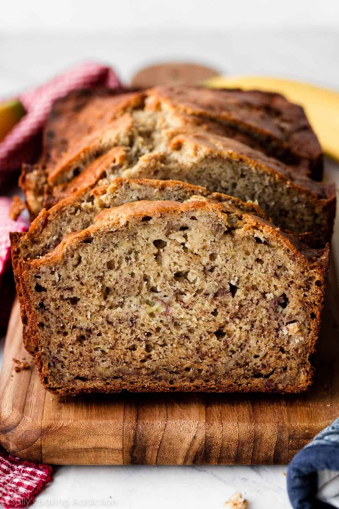

Classic Banana Bread Recipe!
Classic Banana Bread is a moist, tender quick bread made with overripe bananas. It is one of the most beloved home-baked goods in American kitchens, known for its natural sweetness and rich banana flavor. The darker and spottier the bananas, the sweeter and more flavorful the bread.

Ingredients
3 very ripe bananas (about 1½ cups mashed)
⅓ cup (75 g) unsalted butter, melted and cooled
¾ cup (150 g) granulated sugar
1 large egg, beaten
1 teaspoon vanilla extract
1 teaspoon baking soda
¼ teaspoon fine salt
1½ cups (190 g) all-purpose flour
Procedure
- Preheat oven to 350°F (175°C). Grease a 9×5-inch (23×13 cm) loaf pan with butter or non-stick spray.
- In a large mixing bowl, mash the peeled bananas thoroughly with a fork until smooth with only small lumps remaining.
- Stir the melted butter into the mashed banana until fully combined.
- Mix in the sugar, beaten egg, and vanilla extract.
- Sprinkle the baking soda and salt over the mixture and stir to combine.
- Add the flour all at once and fold gently with a spatula until just combined. Do not overmix — a few streaks of flour are fine.
- Fold in any optional add-ins (chocolate chips, nuts, or cinnamon) if using.
- Pour the batter into the prepared loaf pan and smooth the top.
- Bake for 55–65 minutes, until a toothpick inserted in the center comes out clean or with a few moist crumbs.
- Remove from oven and cool in the pan for 10 minutes, then turn out onto a wire rack to cool completely before slicing.